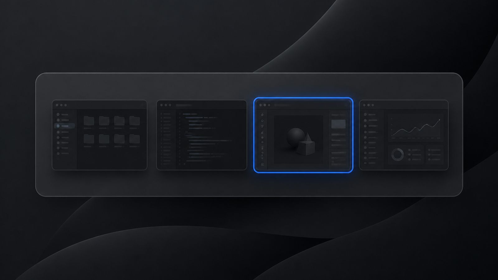

Superdock
SuperdockAlt-Tab on Mac: how to switch between windows like Windows

Short answer: Command-Tab on a Mac cycles through apps, not windows; Command-Backtick cycles the windows of the current app only. To switch between every open window with thumbnails, as Alt-Tab does on Windows, you need a third-party switcher. Superdock includes one: Option-Tab (or Command-Tab if you prefer) shows every window with a thumbnail and title, Escape cancels.
Why does Command-Tab feel wrong to a Windows user?
On Windows, Alt-Tab lists windows. If you have three Chrome windows and two Word documents, that is five entries. On a Mac, Command-Tab lists two entries, Chrome and Word, and lands you on whichever window of that app was last in front. Getting to a specific window takes a second shortcut, Command-Backtick, that many people never learn. Mission Control shows everything but needs a swipe or a key and does not cycle.
What does macOS offer out of the box?
- Command-Tab: app switcher, one icon per app, most recent first.
- Command-Backtick (Command-`): next window of the current app.
- Mission Control (F3 or Control-Up): overview of all windows, no cycling.
- App Exposé (Control-Down): the current app's windows spread out.
How do I get a Windows-style switcher on a Mac?
- Turn it on. In Superdock's menu bar menu, click Window Switcher, or open Settings, Behavior, Switching windows.
- Hold Option and press Tab. A panel lists every open window across your apps, with a thumbnail and title, most recent first. Keep pressing Tab to move; Shift-Tab goes back; arrows work too.
- Release Option. The selected window comes forward. Escape cancels.
- Prefer Command-Tab? Choose it in the same setting; Superdock then replaces Apple's app switcher while it runs.
Which is better, app switching or window switching?
They answer different questions. App switching is faster when each app has one window. Window switching wins when you keep several documents, chats or browser profiles open at once, which is exactly the situation that made you look this up. Superdock lists Chrome windows by profile, so a work window and a personal window are two clearly labelled entries.
Frequently asked questions
Are thumbnails live?
With Screen Recording granted, yes; the switcher captures each window. Without it, you see the app icon and window title instead. Screen Recording is optional.
Does it show minimized windows?
Yes, dimmed, and selecting one un-minimizes it.
Is there a free alternative?
AltTab, an open-source app, offers a Windows-style switcher on its own. Superdock's is one part of a dock that also separates Chrome profiles and previews windows.
Download Superdock for Mac Free for 14 days, no account. $7.99 once after that.